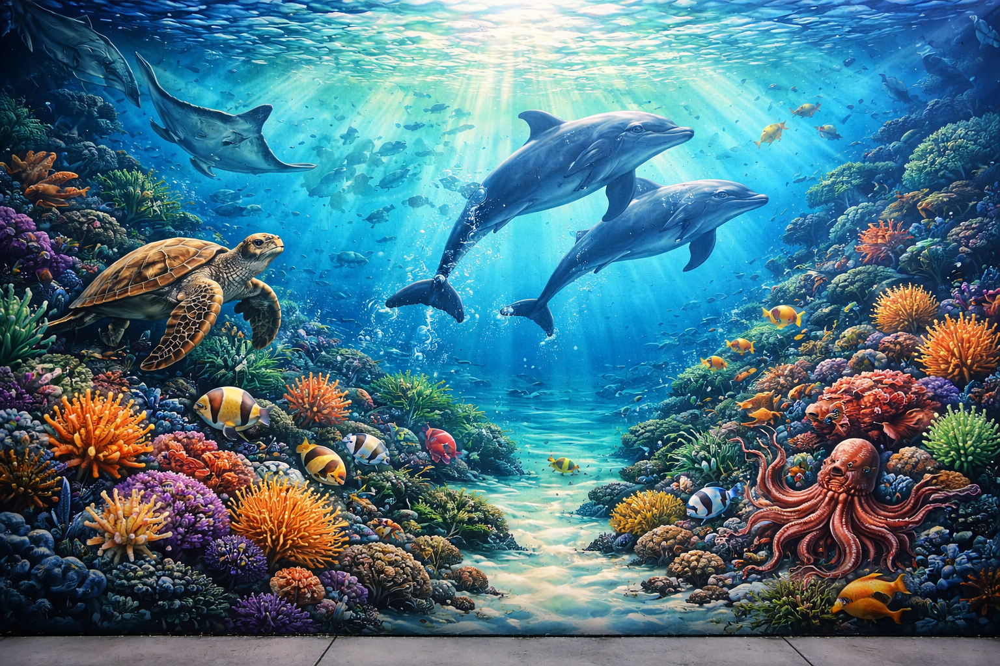
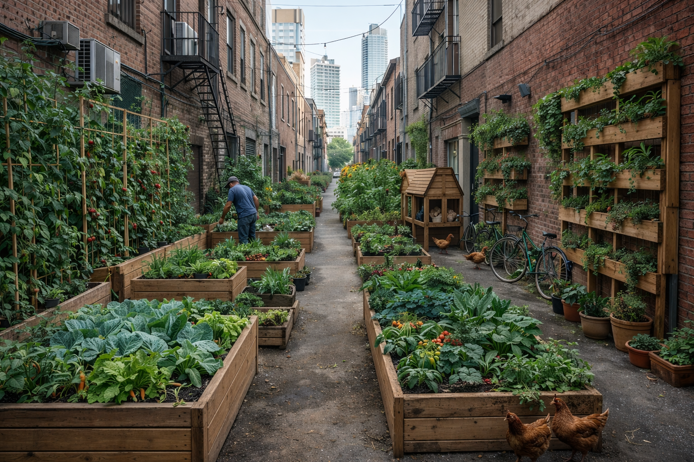

Three Design Interventions
Each intervention addresses specific community needs — from heat reduction to food access to cultural expression.

Shade Structures
Overhead shade structures that cool the alley by 15°F while generating solar energy.
Learn More →
Community Murals
Vibrant murals celebrating Pico-Union's cultural heritage and water conservation.
Learn More →
Urban Farming
Community gardens bringing fresh, locally-grown produce to Pico-Union families.
Learn More →